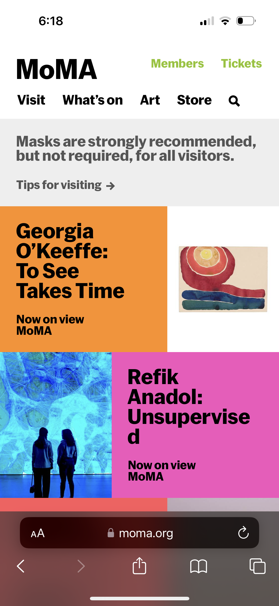
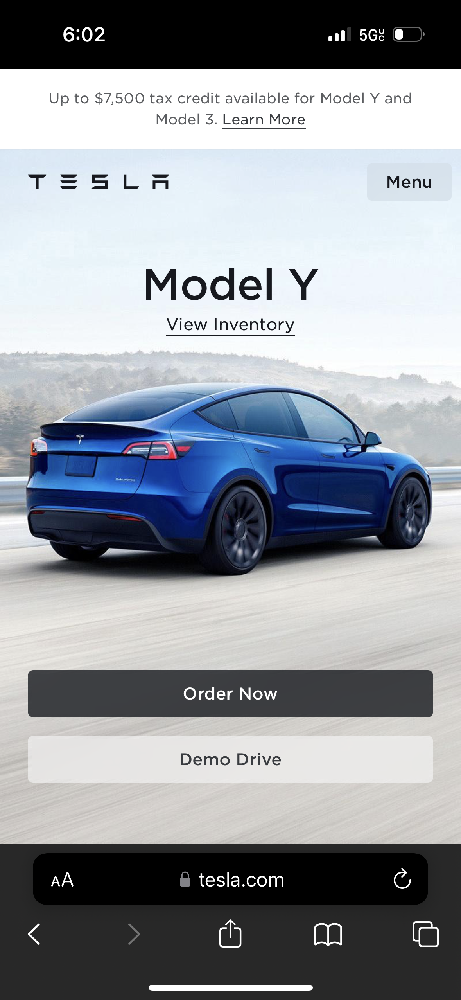

Visual Hierarchy
MoMA

The Museum of Modern Art has great visual hierarchy, guiding the user towards their most important information and exhibits. The page contains the header with navigation links and a search bar. It is structured to facilitate user's experience.
White Space
HBO Max

HBO Max manages its empty space incredibly. Maybe because it is a streaming website, they are used to arranging its show in such manner that they are the focus of the page, and the space around serves to help on that focus.
PARC: Contrast
Tesla

Tesla is such an incredible example of creating contrast on their website. Each car model has its own focus. The colors of each car also come into play for the contrast on the website. The hierarchy and contrast on this website is applied beautifully.